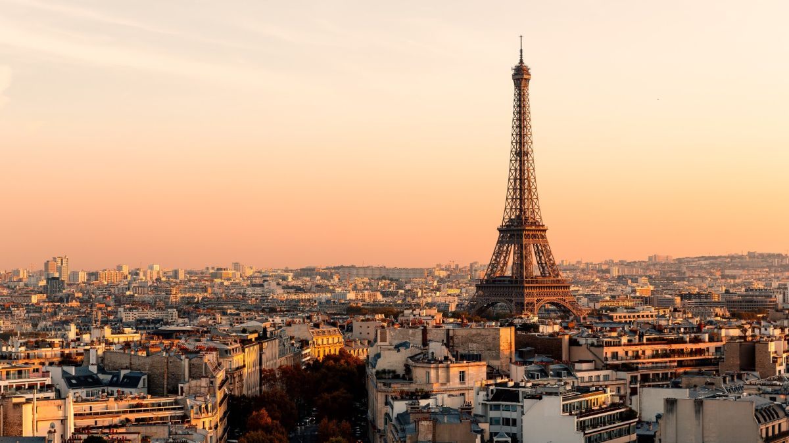

Francija
No visas Rīgas mana mīļāka vieta ir Vecrīga. Un Francija, vai vēl precīzāk Parīze, ir ļoti līdzīga Vecrīgai. Man ļoti patīk Eiropas vecās pilsētas, un manuprāt, Parīze ir vislabākā vecpilsēta Eiropā.
